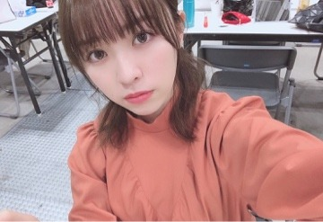

2019/0303Sun一意攻苦
バースデーライブ、
そして七瀬さんの卒業ライブ
無事4日間終了致しました！
沢山走って沢山考えて沢山踊って沢山歌って。
必死に、でも楽しく駆け抜けた4日間でした！
応援しに駆けつけて下さった皆様、
ライブビューイングや生配信で
見て下さっていた皆様、
お家や遠い所から応援して下さっていた皆様、
本当にありがとうございました(^ ^)
そして私達以上に身体を動かし、
寝る間も惜しんでライブを素敵なものに
作り上げて下さった全スタッフの皆様に
感謝しかありません。
ありがとうございました。

独特な雰囲気を持ってると言われる2期
私はその雰囲気が大好きなんだよなあ。
2期が他のユニットとか、選抜曲に出て踊ってる姿が
好きなんです。
そして私が参加させていただいた曲全ては
私にとって大切な曲ですし、
これからも大事にしていきたい！
風船は生きているで登場した時の
あの白いサイリウムの光景は忘れません。
ありがとうございました！
そして君は扇いでくれた
知ってる方の方が少ない気がするけど
アンダーアルバムに収録されている
私にとって大切な2曲目。
素敵な歌詞と曲調、
この歌に参加していないメンバーみんなも
この歌凄く好きなんだと言ってくれていて
素直に嬉しい。
イントロの始まり方が凄く好きなんです
幸せな空間でした！
そして生まれたままで
正直緊張気味でした。
センターを任された時、
嬉しくもあり、不安でもありました。
ファンの方から大事にされている曲だから
私で務まるか不安だったけれど、、
任せて頂いた事、嬉しく思います。
大好きな曲を披露できて良かった！
1期生から始まり、2期生3期生が加入、
そして4期生が加入し、
それぞれの期で色々な思い出、
辛かった事や楽しかった事が
あると思うけれど、
それでも全員で合わせて乃木坂46だから
このライブを通して思ったのは
メンバー全員でこれからも
乃木坂46を大きなものに
していきたいなと思いました。
卒業していくメンバーを見送るのは
寂しいけれど、、
卒業していったメンバー全員の
思いも背負ってみんなで坂を駆け上がりたい
いろいろなことが当たり前ではないから
日々の出来事に感謝をしながら
これからも活動していきたいです。
-------------
七瀬さんの卒業ライブ、
七瀬さんとっても綺麗でした。
七瀬さんのあの優しい笑顔を見る度、
これからもずっとその笑顔で
誰かを笑顔にしていくんだろうな。
私もそうなりたいなあって思いました。
本当にお疲れ様でした！
そしてみさ先輩も卒業を発表されましたね
みさ先輩には色々な事を教わったし、
緊張する現場に一緒にいてくれたし、
感謝する事ばかりです
お返しが出来ていないのが心残り、、
最後まで沢山笑って過ごせたらいいなあ。
あ！前々回の個別握手会の
渡辺を探せの正解は、


私が撮っていました〜。笑
いない、じゃなくて撮る側に回った。
なので、いないという答えは不正解です〜。笑
こちらが前回の。

素敵なお花、毎回本当に嬉しいです
ありがとうございます！！

みり愛
2019/0207Thu一労永逸
こんばんは
東京は雪が一瞬降ったと思ったら
少し暖かく感じる日があったり
まだ冬でいたいのか春になりたいのか
気候は随分と気分屋で困っちゃいます。
季節が変わりゆく瞬間ってなんか
好きですけどね。笑
先日は東京ビッグサイトで
個別握手会がありました。
お越し下さった皆様、ありがとうございます！

ニットニット〜この生地感好き〜
崩れにくいし毛玉にならず、温かい。

肩出し、何年振り？というくらい久々に
やったので皆さんに凄いびっくりされました
ちょっぴり寒かったです。笑
渡辺を探せ
さあ、どこでしょうか〜？
お花、毎回本当にありがとうございます！
珍しかった肌荒れ、治りました

そして先週は沈黙の金曜日に
代打出演させて頂きました！
ちょっぴり最初人見知りもあり
緊張はしていたのですが、、
アルピーのお二人には
私の心の中を全てえぐり取られたような
そんな感覚でした、笑
とっても楽しい2時間でした！
観覧にお越し下さった皆様、
寒い中来てくださり
本当にありがとうございます、、
あの日凄い寒い日で、顔や手が
赤くなってるのを見て凄く
申し訳ない気持ちになりました(>_<)
本当に嬉しかったです、緊張ほぐれた！
ありがとうございます！！！
そしてらじらー。ラジオ続きで嬉しい〜
前回はとてもせかせかしていたので
今回はしっかりオリラジさんと
ゆっくりお話する事が出来たので
嬉しかったです(^ ^)
企画ものが面白く楽しかったですね！笑
それでは。
みり愛
2019/0129Tue金科玉条
こんばんは
少し前になってしまいましたが
個別握手会がありました。
何を見て何でこのポーズなんだろう
という疑問を本人である渡辺が
頭を抱えて悩んでおりますので
永遠の謎となってしまいました。
渡辺を探せ
今回は簡単ですけども〜
横断幕ちまと花の位置がぴったり過ぎて
少々戸惑っておりますけども〜
私、どこかに隠れております〜
今色とりどりのお花を沢山頂き
今回は私の大好きなハーバリウムも
頂きました。
嬉しい、、癒された、、
ありがとうございます！！
そして！台北！ありがとうございました！
台北の皆様にお会いできた事
物凄く嬉しかったです。
タオルだけを胸元で持って
ジーっと私の事を見てくれている方や
サイリウムの色を知ってくれていて
沢山振ってくれていた方
日本の皆様とは応援の仕方が
異なっていてそれもまた新鮮で
楽しかったです(^ ^)

皆さんがみりあ〜！とかわたなべ〜！とか
呼んでくださるのが嬉しかったです
わたなべ〜って言われた時は
流石にびっくりしたけれど。笑
また絶対、遊びに行きます。
お花ああああああ
台湾の皆様からお花頂きました
はああん、嬉しいです、、
急遽出る事が決まったにも関わらず、
日本から応援の言葉をかけて下さった皆様
台北まで駆けつけてくれた皆様
本当にありがとうございます。
素敵な思い出になりました(^ ^)
そしてもう一つ告知させて下さい。
"しろ彩"という化粧品さんと
お仕事させて頂きました。
しろ彩は私が元々ネットで見つけて
ずっと使っていた商品でして
雑誌で紹介した時、
それをしろ彩のスタッフさんが
見つけて下さっていたみたいです、、
素敵なご縁に感謝。
自分が使っていた化粧品のお仕事に
携わらせて頂く事がこんなに嬉しいとは、、
しろ彩をもっといろいろな方に
知って頂きたいなあ
女性の方にだけではなく、
男性の方にもおすすめです(^ ^)
ネットだけの情報じゃ少し疑いから
入ってしまうのが人間。
私も最初しろ彩を見つけた時は
本当に効くんかーいって思っていましたが
肌が白く皮膚が薄いので
頬の部分が赤らんでしまうんです。
それに悩みを感じていたので
えいや！という勢いで購入し、
使っているうちに「あらいいぞ」
となっていき、今では定期購入しています。笑
保湿効果もしっかりあるので
乾燥肌、敏感肌の方には
とてもいいと思います(^ ^)
私が使っていて良いなと感じたので
同じ悩みを持っている方や
化粧水何にしようか迷っている方は
是非使って頂きたいなと思います。
スタッフの皆様も凄く優しくて
撮影中もずっと楽しかった〜
それでは。
みり愛
2019/0116Wed孝行恩愛
成人を迎えられた皆様、
おめでとうございます(^ ^)

駅のホームで電車を待っていたら
「〇〇はどれに乗れば
いいか分かりますか？」と聞かれ
私は残念ながら分からなかったので
携帯で調べていたのですが
なかなか出てこなくて
その時は時間がなかったので
「調べたんですけど分からなくて、、
すみません」と言って別れたのですが
後々しっかり調べたらすぐ出てきて
教えてあげようと思って電車の中
見回したのですが
残念ながらおらず、、、
しっかり最後まで道案内を
してあげられなかった事に
後悔と申し訳なさを感じながら
ブログを書いています。笑
無事着いているといいなあ
先日はパシフィコ横浜にて
個別握手会がありました。
1.2部

3部

4.5部

生誕Tシャツ
遅ればせながらやっと皆さんと
着る事が出来ました〜
急遽お願いしたのに
合わせて着て下さった皆様、
いきなり過ぎて準備が出来なかった方も
いらっしゃって
申し訳なかったです、、
わざわざありがとうございました！

お花も色とりどり頂いて
個性があって素敵です。
嬉しい、ありがとうございます！
渡辺を探せ
難しいですよ今回も〜
告知
・横浜ウォーカー 1/19発売
かりんちゃんといちご狩りしてきました！
横浜にいちご狩り年中無休で
出来る場所があるとは、、
写真好き、いちご好きには
素敵な場所でした(^ ^)
そして！
先日発表がありましたが、
ザンビのドラマに出演致します。
放送をお楽しみにしていて下さい(^^)
みり愛
2019/0111Fri度徳量力

先日は大阪で個別握手会がありました
お越し下さった皆様、
ありがとうございます！
1部は深緑のワンピース
2.3部は上記の写真の服
4.5部は

ヴィンテージで購入
みんなにはドラゴンボールに出てくる
何かのキャラクターに似てるって
言われたような。笑
なんだそれ！！笑
お花だけと思いきや
私、どこかにおります。
今回は難易度高めだ
今回も沢山のお花、、
毎回言いますが本当に嬉しいです
花に囲まれる環境が幸せ〜
猫舌SHOWROOMありがとうございました！
日奈子とハイなテンションに
なってしまって終始うるさかった
気がしております、、笑
楽しい2時間でした！
最後少し延長して下さった
猫舌のスタッフさんの優しさ、、
最後まで見ていただいた皆様
ありがとうございました！
次は14日、お越し下さる皆様
どうぞ宜しくお願い致します！
みり愛